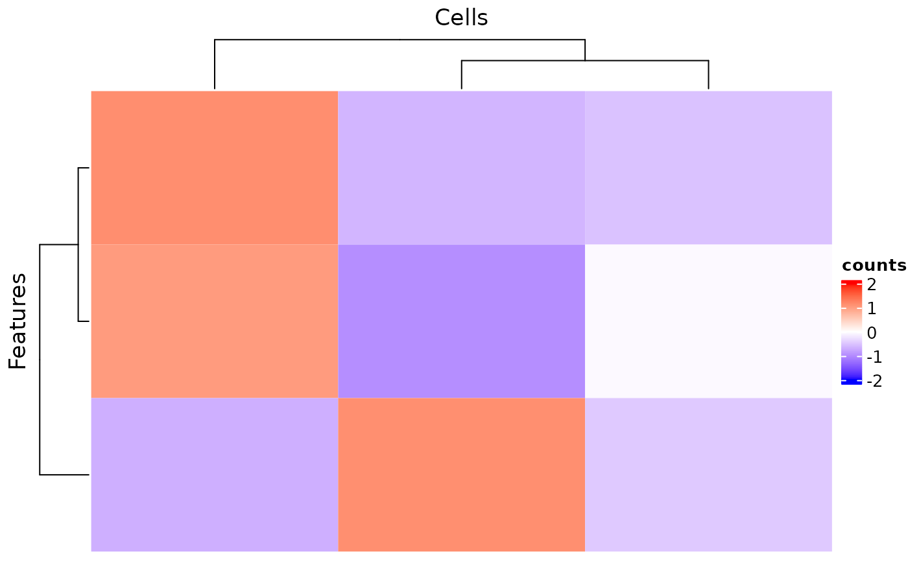

R/plotSCEHeatmap.R
plotSCEHeatmap.RdPlot heatmap of using data stored in SingleCellExperiment Object
plotSCEHeatmap(
inSCE,
useAssay = "logcounts",
doLog = FALSE,
featureIndex = NULL,
cellIndex = NULL,
scale = TRUE,
trim = c(-2, 2),
featureIndexBy = "rownames",
cellIndexBy = "rownames",
rowDataName = NULL,
colDataName = NULL,
featureAnnotations = NULL,
cellAnnotations = NULL,
featureAnnotationColor = NULL,
cellAnnotationColor = NULL,
rowSplitBy = NULL,
colSplitBy = NULL,
rowLabel = FALSE,
colLabel = FALSE,
rowLabelSize = 8,
colLabelSize = 8,
rowDend = TRUE,
colDend = TRUE,
title = NULL,
rowTitle = "Genes",
colTitle = "Cells",
rowGap = grid::unit(0, "mm"),
colGap = grid::unit(0, "mm"),
border = FALSE,
colorScheme = NULL,
...
)
plotSCEDimReduceHeatmap(
inSCE,
useReducedDim,
featureIndex = NULL,
cellIndex = NULL,
doLog = FALSE,
scale = FALSE,
trim = c(-2, 2),
cellIndexBy = "rownames",
colDataName = NULL,
featureAnnotations = NULL,
cellAnnotations = NULL,
featureAnnotationColor = NULL,
cellAnnotationColor = NULL,
rowSplitBy = NULL,
colSplitBy = NULL,
rowLabel = FALSE,
colLabel = FALSE,
rowLabelSize = 8,
colLabelSize = 8,
rowDend = TRUE,
colDend = TRUE,
title = NULL,
rowTitle = "Dimensions",
colTitle = "Cells",
rowGap = grid::unit(0, "mm"),
colGap = grid::unit(0, "mm"),
border = FALSE,
colorScheme = NULL,
...
)SingleCellExperiment inherited object.
character. A string indicating the assay name that
provides the expression level to plot. Only for plotSCEHeatmap.
Logical scalar. Whether to do log(assay + 1)
transformation on the assay indicated by useAssay. Default
FALSE.
A vector that can subset the input SCE object by rows
(features). Alternatively, it can be a vector identifying features in
another feature list indicated by featureIndexBy. Default NULL.
A vector that can subset the input SCE object by columns
(cells). Alternatively, it can be a vector identifying cells in another
cell list indicated by featureIndexBy. Default NULL.
Whether to perform z-score scaling on each row. Default
TRUE.
A 2-element numeric vector. Values outside of this range will be
trimmed to their nearst bound. Default c(-2, 2)
A single character specifying a column name of
rowData(inSCE), or a vector of the same length as nrow(inSCE),
where we search for the non-rowname feature indices. Not applicable for
plotSCEDimReduceHeatmap. Default "rownames".
A single character specifying a column name of
colData(inSCE), or a vector of the same length as ncol(inSCE),
where we search for the non-rowname cell indices. Default "rownames".
character. The column name(s) in rowData that need
to be added to the annotation. Not applicable for
plotSCEDimReduceHeatmap. Default NULL.
character. The column name(s) in colData that need
to be added to the annotation. Default NULL.
data.frame, with rownames containing
all the features going to be plotted. Character columns should be factors.
Default NULL.
data.frame, with rownames containing
all the cells going to be plotted. Character columns should be factors.
Default NULL.
A named list. Customized color settings for
feature labeling. Should match the entries in the featureAnnotations
or rowDataName. For each entry, there should be a list/vector of
colors named with categories. Default NULL.
A named list. Customized color settings for
cell labeling. Should match the entries in the cellAnnotations or
colDataName. For each entry, there should be a list/vector of colors
named with categories. Default NULL.
character. Do semi-heatmap based on the grouping of
this(these) annotation(s). Should exist in either rowDataName or
names(featureAnnotations). Default NULL.
character. Do semi-heatmap based on the grouping of
this(these) annotation(s). Should exist in either colDataName or
names(cellAnnotations). Default NULL.
Use a logical for whether to display all the feature names,
a single character to display a column of rowData(inSCE) annotation,
a vector of the same length as full/subset nrow(inSCE) to display
customized info. Default FALSE.
Use a logical for whether to display all the cell names, a
single character to display a column of colData(inSCE) annotation,
a vector of the same length as full/subset ncol(inSCE) to display
customized info. Default FALSE.
A number for the font size of feature names. Default
8
A number for the font size of cell names. Default
8
Whether to display row dendrogram. Default TRUE.
Whether to display column dendrogram. Default TRUE.
The main title of the whole plot. Default NULL.
The subtitle for the rows. Default "Genes".
The subtitle for the columns. Default "Cells".
A numeric value or a unit object. For the
gap size between rows of the splitted heatmap. Default
grid::unit(0, 'mm').
A numeric value or a unit object. For the
gap size between columns of the splitted heatmap. Default
grid::unit(0, 'mm').
A logical scalar. Whether to show the border of the heatmap or
splitted heatmaps. Default TRUE.
function. A function that generates color code by giving
a value. Can be generated by colorRamp2.
Default NULL.
Other arguments passed to Heatmap.
character. A string indicating the reducedDim name that
provides the expression level to plot. Only for plotSCEDimReduceHeatmap.
A ggplot object.
data(scExample, package = "singleCellTK")
plotSCEHeatmap(sce[1:3,1:3], useAssay = "counts")
